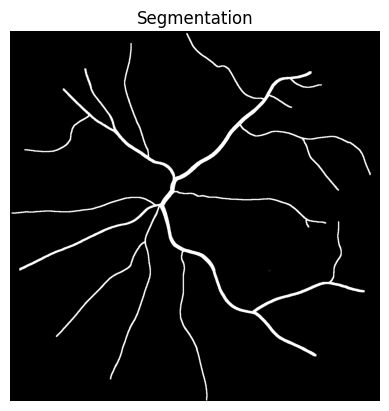
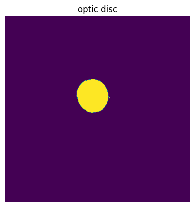
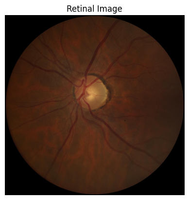
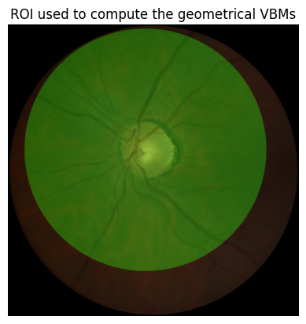
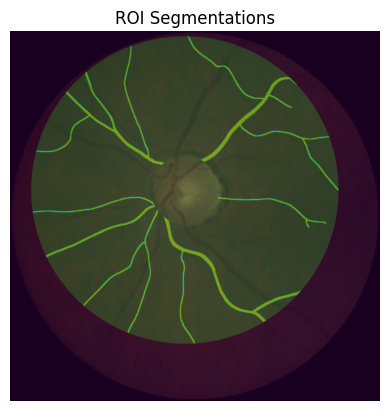
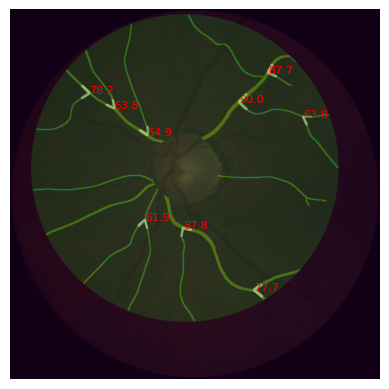
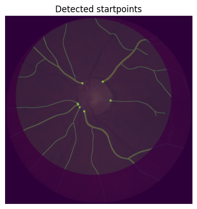
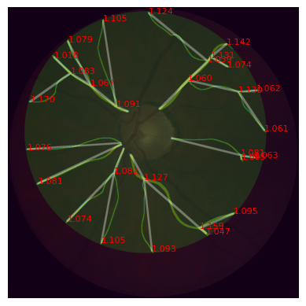
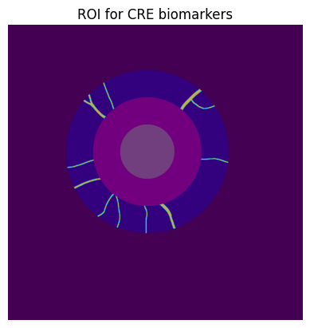

PVBM Tutorial
If you are using colab, install the pvbm library by uncommenting the following cell
[77]:
#pip install pvbm --upgrade``
Import the libraries
[78]:
%load_ext autoreload
%autoreload 2
The autoreload extension is already loaded. To reload it, use:
%reload_ext autoreload
[79]:
from PIL import Image,ImageFilter #Import Pillow library to load the images
import numpy as np #Import numpy
import matplotlib.pyplot as plt #Import matplotlib library for visualization
from skimage.morphology import skeletonize,square,dilation #Import functions to compute morphological operations
import os
import pathlib
import sys
sys.setrecursionlimit(100000)
Download the PVBM datasets
[80]:
path_to_save_datasets = "../PVBM_datasets"
[5]:
from PVBM.Datasets import PVBM_Datasets
dataset_downloader = PVBM_Datasets()
dataset_downloader.download_dataset("Crop_HRF", path_to_save_datasets)
dataset_downloader.download_dataset("INSPIRE", path_to_save_datasets)
dataset_downloader.download_dataset("UNAF", path_to_save_datasets)
print("Images downloaded successfully")
Downloading...
From (original): https://drive.google.com/uc?id=1QcozuK5yDyXbBkHqkbM5bxEkTGzkPDl3
From (redirected): https://drive.google.com/uc?id=1QcozuK5yDyXbBkHqkbM5bxEkTGzkPDl3&confirm=t&uuid=fccf44be-9ed4-4ad5-890b-6c13c1e33750
To: /Users/jonathanfhima/Desktop/PVBMRelated/PVBM/Crop_HRF.zip
100%|██████████████████████████████████████| 42.0M/42.0M [00:01<00:00, 24.4MB/s]
Dataset downloaded and saved to Crop_HRF.zip
Files extracted to ../PVBM_datasets
Deleted the zip file: Crop_HRF.zip
Downloading...
From (original): https://drive.google.com/uc?id=18TcmkuN_eZgM2Ph5XiX8x7_ejtKhA3qb
From (redirected): https://drive.google.com/uc?id=18TcmkuN_eZgM2Ph5XiX8x7_ejtKhA3qb&confirm=t&uuid=a65c30f2-b751-4eed-863b-80009945b8a3
To: /Users/jonathanfhima/Desktop/PVBMRelated/PVBM/INSPIRE.zip
100%|██████████████████████████████████████| 29.6M/29.6M [00:01<00:00, 20.5MB/s]
Dataset downloaded and saved to INSPIRE.zip
Files extracted to ../PVBM_datasets
Deleted the zip file: INSPIRE.zip
Downloading...
From: https://drive.google.com/uc?id=1IM5qUEARNp2RFpzKmILbdgasjLuJEIcX
To: /Users/jonathanfhima/Desktop/PVBMRelated/PVBM/UNAF.zip
100%|██████████████████████████████████████| 19.7M/19.7M [00:00<00:00, 19.8MB/s]
Dataset downloaded and saved to UNAF.zip
Files extracted to ../PVBM_datasets
Deleted the zip file: UNAF.zip
Images downloaded successfully
[6]:
list(pathlib.Path(path_to_save_datasets).glob("*/*"))
[6]:
[PosixPath('../PVBM_datasets/Paraguay_crop/artery'),
PosixPath('../PVBM_datasets/Paraguay_crop/veins'),
PosixPath('../PVBM_datasets/Paraguay_crop/images'),
PosixPath('../PVBM_datasets/Paraguay_crop/unknown'),
PosixPath('../PVBM_datasets/INSPIRE/artery'),
PosixPath('../PVBM_datasets/INSPIRE/veins'),
PosixPath('../PVBM_datasets/INSPIRE/images'),
PosixPath('../PVBM_datasets/INSPIRE/labels'),
PosixPath('../PVBM_datasets/__MACOSX/._CropHRF'),
PosixPath('../PVBM_datasets/__MACOSX/CropHRF'),
PosixPath('../PVBM_datasets/CropHRF/artery'),
PosixPath('../PVBM_datasets/CropHRF/veins'),
PosixPath('../PVBM_datasets/CropHRF/images'),
PosixPath('../PVBM_datasets/CropHRF/unknown')]
Load an image
[149]:
segmentation_path = list(pathlib.Path(path_to_save_datasets).glob("*/artery/*"))[21]
segmentation_path
[149]:
PosixPath('../PVBM_datasets/INSPIRE/artery/image13.png')
[150]:
segmentation = Image.open(segmentation_path) #Open the segmentation
[151]:
plt.imshow(segmentation,cmap = "gray") #Display the segmentation
plt.title("Segmentation")
plt.show()

[152]:
image_path = str(segmentation_path).replace("artery","images").replace("veins", "images")
image = Image.open(image_path)
plt.imshow(image) #Display the segmentation
plt.title("Image")
plt.show()

[153]:
# Depending on the quality of the segmentation, you would need to regularize (smooth) it more or less
#before computing the skeleton for instance by uncomment the following command
#segmentation = segmentation.filter(ImageFilter.ModeFilter(size=3))
segmentation = np.array(segmentation)/255 #Convert the segmentation to a numpy array with value 0 and 1
skeleton = skeletonize(segmentation)*1 # Compute the skeleton of the segmentation
[154]:
plt.imshow(skeleton,cmap = 'gray')
plt.title("Segmentation skeleton")
plt.show()
Extract the optic disc
[155]:
from PVBM.DiscSegmenter import DiscSegmenter
segmenter = DiscSegmenter()
[156]:
optic_disc = segmenter.segment(str(segmentation_path).replace("artery","images").replace("veins", "images"))
[157]:
plt.imshow(optic_disc)
plt.title("optic disc")
plt.show()
plt.imshow(image) #Display the segmentation
plt.title("Image")
plt.show()


[158]:
center, radius, roi, zones_ABC = segmenter.post_processing(optic_disc, max_roi_size = 600)
[159]:
center
[159]:
(716, 743)
[160]:
radius
[160]:
116
[161]:
plt.imshow(image)
plt.imshow(roi, alpha = 0.3)
plt.title("ROI used to compute the geometrical VBMs")
plt.show()

[162]:
plt.imshow(image)
plt.imshow(zones_ABC, alpha = 0.3)
plt.title("Zones A,B and C used to compute the Central retinal equivalents")
plt.show()
Clipping input data to the valid range for imshow with RGB data ([0..1] for floats or [0..255] for integers).

Compute the geometrical VBMs
[163]:
segmentation_roi = segmentation * (1-zones_ABC[:,:,1]/255)
segmentation_roi = segmentation_roi * roi[:,:,1]/255
skeleton_roi = skeleton * (1-zones_ABC[:,:,1]/255)
skeleton_roi = skeleton_roi * roi[:,:,1]/255
[164]:
plt.imshow(image)
plt.imshow(segmentation_roi, alpha = 0.5)
plt.imshow(roi, alpha = 0.2)
plt.title("Segmentation within the ROI that will be used for the geometrical VBMs")
plt.show()

[165]:
plt.imshow(image)
plt.imshow(skeleton_roi, alpha = 0.5)
plt.imshow(roi, alpha = 0.2)
plt.title("Skeleton within the ROI that will be used for the geometrical VBMs")
plt.show()

[166]:
from PVBM.GeometryAnalysis import GeometricalVBMs #Import the geometry analysis module
geometricalVBMs = GeometricalVBMs() #Instanciate a geometrical VBM object
[167]:
vbms, visual = geometricalVBMs.compute_geomVBMs(segmentation_roi, skeleton_roi, center[0], center[1], radius)
[168]:
area, TI, medTor, ovlen, medianba, startp, endp, interp = vbms
area, TI, medTor, ovlen, medianba, startp, endp, interp
print(f"\n Area : {area} \n Tortuosity Index: {TI} \n Median Tortuosity: {medTor}\n Overall Length {ovlen} \n Median Branching angles {medianba}\n Number of Start/End/Intersection points {startp}/ {endp} / {interp}")
Area : 65942.0
Tortuosity Index: 1.1054387940455703
Median Tortuosity: 1.0873756533851584
Overall Length 9855.804250767835
Median Branching angles 67.75097634278762
Number of Start/End/Intersection points 12/ 38.0 / 25.0
[169]:
endpoints, interpoints, startpoints, angles_dico, topology_dico = visual
Plot the branching angles
[170]:
from skimage.draw import line_aa
import matplotlib.pyplot as plt
import numpy as np
from scipy.ndimage import binary_dilation
img = np.zeros_like(segmentation)
for key, value in angles_dico.items():
b = key
if len(value)>1:
a,c = value
if b is not None and c is not None and a is not None:
ba = np.array(a) - np.array(b)
bc = np.array(c) - np.array(b)
cosine_angle = np.dot(ba, bc) / (np.linalg.norm(ba) * np.linalg.norm(bc))
angle = np.arccos(cosine_angle)
rr, cc, val = line_aa(b[0], b[1], a[0], a[1])
img[rr, cc] = val * 255
rr, cc, val = line_aa(b[0], b[1], c[0], c[1])
img[rr, cc] = val * 255
plt.text(b[1], b[0], f"{np.degrees(angle):.1f}", color='red', fontsize=8)
# Dilate the image
img_dilated = binary_dilation(img, structure=np.ones((8,8))) * 255
plt.imshow(image)
plt.imshow(segmentation_roi, alpha = 0.5)
plt.imshow(roi, alpha = 0.2)
plt.imshow(img_dilated, cmap='gray', alpha = 0.3)
plt.show()

Plot the particular points
[172]:
plt.imshow(image)
plt.imshow(segmentation_roi, alpha = 0.5)
plt.imshow(roi, alpha = 0.2)
plt.imshow(segmentation/50+dilation(endpoints, square(15)), alpha = 0.5)
plt.title("Detected endpoints")
plt.show()

[173]:
plt.imshow(image)
plt.imshow(segmentation_roi, alpha = 0.5)
plt.imshow(roi, alpha = 0.2)
plt.imshow(segmentation/20+dilation(interpoints, square(15)), alpha = 0.5)
plt.title("Detected Intersection points")
plt.show()
[174]:
plt.imshow(image)
plt.imshow(segmentation_roi, alpha = 0.5)
plt.imshow(roi, alpha = 0.2)
plt.imshow(segmentation/20+dilation(startpoints, square(15)), alpha = 0.5)
plt.title("Detected startpoints")
plt.show()

Plot the linear interpolation of the particular points
[175]:
from skimage.draw import line_aa
import matplotlib.pyplot as plt
import numpy as np
from scipy.ndimage import binary_dilation
img = np.zeros_like(segmentation)
for key, value in topology_dico.items():
rr, cc, val = line_aa(key[0], key[1], key[2], key[3])
img[rr, cc] = val * 255
plt.text(key[3], key[2], f"{value[0]/value[1]:.3f}", color='red', fontsize=8)
# Dilate the image
img_dilated = binary_dilation(img, structure=np.ones((8,8))) * 255
plt.imshow(image)
plt.imshow(segmentation_roi, alpha = 0.5)
plt.imshow(roi, alpha = 0.2)
plt.imshow(img_dilated, cmap='gray', alpha = 0.3)
plt.show()

Fractal Analysis
[176]:
from PVBM.FractalAnalysis import MultifractalVBMs
fractalVBMs = MultifractalVBMs(n_rotations = 25,optimize = True, min_proba = 0.0001, maxproba = 0.9999)
[177]:
D0,D1,D2,SL = fractalVBMs.compute_multifractals(segmentation_roi.copy())
[178]:
print("The fractal biomarkers are D0: {}, D1: {}, D2: {}, SL: {}".format(D0,D1,D2,SL))
The fractal biomarkers are D0: 1.3993681926354087, D1: 1.3768072496352408, D2: 1.3607788432788932, SL: 0.880143831837211
Central Retinal Equivalent Analysis
[179]:
from PVBM.CentralRetinalAnalysis import CREVBMs
creVBMs = CREVBMs()
[180]:
zone_A_ = zones_ABC[:,:,1]/255
zone_B_ = zones_ABC[:,:,0]/255
zone_C_ = zones_ABC[:,:,2]/255
roi = (zone_C_ - zone_B_)
[181]:
plt.imshow(image)
plt.imshow(roi, alpha = 0.3)
plt.title("ROI used to compute the CRE")
plt.show()

[182]:
segmentation_roi = (segmentation * roi)
skeleton_roi = (skeleton * roi)
[183]:
plt.imshow(segmentation_roi)
plt.imshow(zones_ABC, alpha = 0.3)
Clipping input data to the valid range for imshow with RGB data ([0..1] for floats or [0..255] for integers).
[183]:
<matplotlib.image.AxesImage at 0x2aef5ec10>

[184]:
out = creVBMs.compute_central_retinal_equivalents(segmentation_roi.copy(), skeleton_roi.copy(),center[0],center[1], radius, artery = True, Toplot = True )
[185]:
plot = False
if out == -1:
raise ValueError("The CRE computation failed")
else:
output, visualisation = out
print(output)
{'craek': 16.370315992084855, 'craeh': 17.34725476830511}
[186]:
# Load all images
measurements = [item['plot'] for item in visualisation]
# Compute the maximum image
measurements = np.maximum.reduce(measurements)
[187]:
# Create a new figure
plt.imshow(image)
plt.imshow(segmentation_roi, alpha = 0.3)
plt.imshow(zones_ABC, alpha = 0.3)
plt.imshow(measurements)
startpoints_cre = np.zeros((segmentation_roi.shape[0], segmentation_roi.shape[1]))
# Annotate the image with 'Mean diameter' from each dictionary
for item in visualisation:
startpoints_cre[item["start"]] = 1
# Get the 'end' location and 'Mean diameter'
end_location = item['end'] # Assuming 'end' is a tuple (x, y)
mean_diameter = "{:.2f}".format(item['Median diameter'])
# Annotate the image
plt.annotate(mean_diameter,
(end_location[1], end_location[0]),
color='white',
fontsize=18)
# Display the combined image
plt.imshow(dilation(startpoints_cre, square(15)), alpha = 0.5)
plt.axis('off')
plt.tight_layout()
plt.show()
Clipping input data to the valid range for imshow with RGB data ([0..1] for floats or [0..255] for integers).